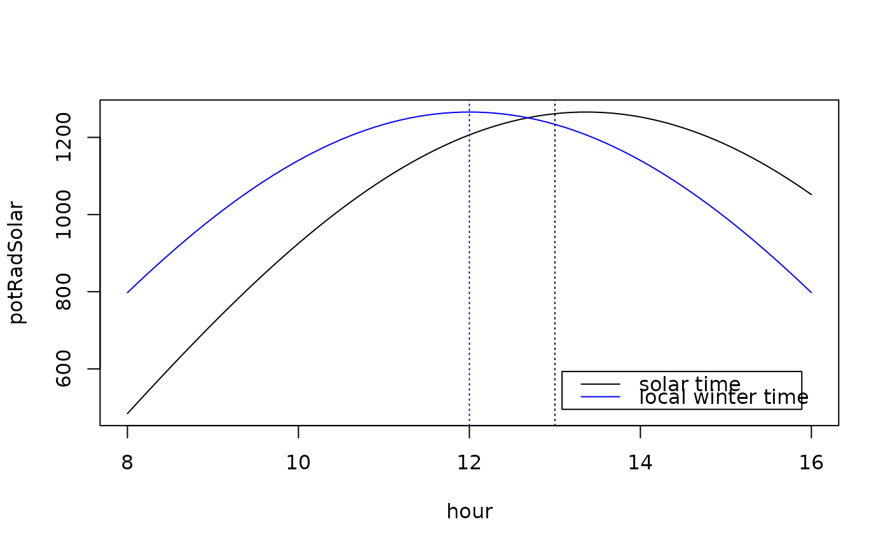

fCalcPotRadiation.RdCalculate the potential radiation
fCalcPotRadiation(DoY = DoY.V.n, Hour = Hour.V.n,
LatDeg = Lat_deg.n, LongDeg = Long_deg.n,
TimeZone = TimeZone_h.n, useSolartime = TRUE,
DoY.V.n, Hour.V.n, Lat_deg.n, Long_deg.n,
TimeZone_h.n, useSolartime.b = TRUE)Data vector with day of year (DoY), same length as Hour or length 1
Data vector with time as decimal hour of local time zone
Latitude in (decimal) degrees
Longitude in (decimal) degrees
Time zone (in hours)
by default corrects hour (given in local winter time) for latitude to solar time (where noon is exactly at 12:00). Set this to FALSE to directly use local winter time
deprecated
deprecated
deprecated
deprecated
deprecated
deprecated
Data vector of potential radiation (PotRad, W_m-2)
hour <- seq(8, 16, by = 0.1)
potRadSolar <- fCalcPotRadiation(160, hour, 39.94, -5.77, TimeZone = +1)
potRadLocal <- fCalcPotRadiation(160, hour, 39.94, -5.77, TimeZone = +1
, useSolartime = FALSE)
plot(potRadSolar ~ hour, type = 'l')
abline(v = 13, lty = "dotted")
lines(potRadLocal ~ hour, col = "blue")
abline(v = 12, col = "blue", lty = "dotted")
legend("bottomright", legend = c("solar time", "local winter time")
, col = c("black", "blue"), inset = 0.05, lty = 1)
